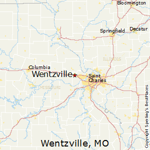
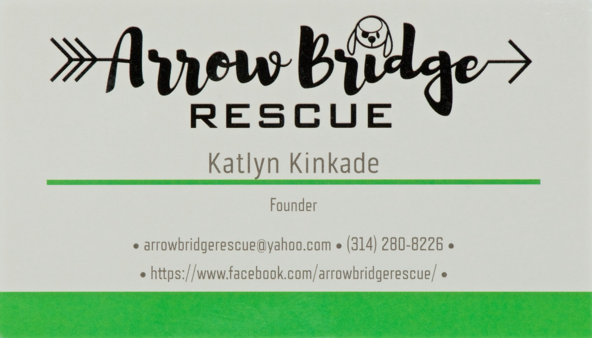

-
Home
-
Services (current)
Services We Provide
Arrow Bridge Rescue & Rehabilitation Sanctuary is a small, volunteer-operated,
501(c)(3) nonprofit organization that is committed to providing loving medical and hospice care for
dogs with special needs in St. Charles County.
Our Founder
Kaitlyn Kincaid
Kaitlyn Founded Arrow Bridge Rescue
Where To Find Us
Address
753 this street blvd
Wentzville MO

